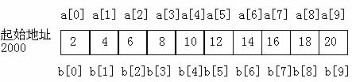

数组可以作为函数的参数使用，进行数据传送。数组用作函数参数有两种形式，一种是把数组元素(下标变量)作为实参使用；另一种是把数组名作为函数的形参和实参使用。
数组元素就是下标变量，它与普通变量并无区别。 因此它作为函数实参使用与普通变量是完全相同的，在发生函数调用时，把作为实参的数组元素的值传送给形参，实现单向的值传送。例5.4说明了这种情况。
void nzp(int v)
{
if(v>0)
printf("%d ",v);
else
printf("%d ",0);
}
main()
{
int a[5],i;
printf("input 5 numbers\n");
for(i=0;i<5;i++)
{scanf("%d",&a[i]);
nzp(a[i]);}
}
本程序中首先定义一个无返回值函数nzp，并说明其形参v为整型变量。在函数体中根据v值输出相应的结果。在main函数中用一个for语句输入数组各元素，每输入一个就以该元素作实参调用一次nzp函数，即把a[i]的值传送给形参v，供nzp函数使用。
用数组名作函数参数与用数组元素作实参有几点不同：
1) 用数组元素作实参时，只要数组类型和函数的形参变量的类型一致，那么作为下标变量的数组元素的类型也和函数形参变量的类型是一致的。因此，并不要求函数的形参也是下标变量。换句话说，对数组元素的处理是按普通变量对待的。用数组名作函数参数时，则要求形参和相对应的实参都必须是类型相同的数组，都必须有明确的数组说明。当形参和实参二者不一致时，即会发生错误。
2) 在普通变量或下标变量作函数参数时，形参变量和实参变量是由编译系统分配的两个不同的内存单元。在函数调用时发生的值传送是把实参变量的值赋予形参变量。在用数组名作函数参数时，不是进行值的传送，即不是把实参数组的每一个元素的值都赋予形参数组的各个元素。因为实际上形参数组并不存在，编译系统不为形参数组分配内存。那么，数据的传送是如何实现的呢?在我们曾介绍过，数组名就是数组的首地址。因此在数组名作函数参数时所进行的传送只是地址的传送，也就是说把实参数组的首地址赋予形参数组名。形参数组名取得该首地址之后，也就等于有了实在的数组。实际上是形参数组和实参数组为同一数组，共同拥有一段内存空间。

上图说明了这种情形。图中设a为实参数组，类型为整型。a占有以2000为首地址的一块内存区。b为形参数组名。当发生函数调用时，进行地址传送，把实参数组a的首地址传送给形参数组名b，于是b也取得该地址2000。于是a，b两数组共同占有以2000为首地址的一段连续内存单元。从图中还可以看出a和b下标相同的元素实际上也占相同的两个内存单元(整型数组每个元素占二字节)。例如a[0]和b[0]都占用2000和2001单元，当然a[0]等于b[0]。类推则有a[i]等于b[i]。
float aver(float a[5])
{
int i;
float av,s=a[0];
for(i=1;i<5;i++)
s=s+a[i];
av=s/5;
return av;
}
void main()
{
float sco[5],av;
int i;
printf("\ninput 5 scores:\n");
for(i=0;i<5;i++)
scanf("%f",&sco[i]);
av=aver(sco);
printf("average score is %5.2f",av);
}
本程序首先定义了一个实型函数aver，有一个形参为实型数组a，长度为5。在函数aver中，把各元素值相加求出平均值，返回给主函数。主函数main 中首先完成数组sco的输入，然后以sco作为实参调用aver函数，函数返回值送av，最后输出av值。 从运行情况可以看出，程序实现了所要求的功能。
3) 前面已经讨论过，在变量作函数参数时，所进行的值传送是单向的。即只能从实参传向形参，不能从形参传回实参。形参的初值和实参相同，而形参的值发生改变后，实参并不变化，两者的终值是不同的。而当用数组名作函数参数时，情况则不同。由于实际上形参和实参为同一数组，因此当形参数组发生变化时，实参数组也随之变化。当然这种情况不能理解为发生了“双向”的值传递。但从实际情况来看，调用函数之后实参数组的值将由于形参数组值的变化而变化。为了说明这种情况，把例5.4改为例5.6的形式。
void nzp(int a[5])
{
int i;
printf("\nvalues of array a are:\n");
for(i=0;i<5;i++)
{
if(a[i]<0) a[i]=0;
printf("%d ",a[i]);
}
}
main()
{
int b[5],i;
printf("\ninput 5 numbers:\n");
for(i=0;i<5;i++)
scanf("%d",&b[i]);
printf("initial values of array b are:\n");
for(i=0;i<5;i++)
printf("%d ",b[i]);
nzp(b);
printf("\nlast values of array b are:\n");
for(i=0;i<5;i++)
printf("%d ",b[i]);
}
本程序中函数nzp的形参为整数组a，长度为5。主函数中实参数组b也为整型，长度也为5。在主函数中首先输入数组b的值，然后输出数组b的初始值。然后以数组名b为实参调用nzp函数。在nzp中，按要求把负值单元清0，并输出形参数组a的值。 返回主函数之后，再次输出数组b的值。从运行结果可以看出，数组b的初值和终值是不同的，数组b的终值和数组a是相同的。这说明实参形参为同一数组，它们的值同时得以改变。
用数组名作为函数参数时还应注意以下几点：
a.形参数组和实参数组的类型必须一致，否则将引起错误。
b.形参数组和实参数组的长度可以不相同，因为在调用时，只传送首地址而不检查形参数组的长度。当形参数组的长度与实参数组不一致时，虽不至于出现语法错误(编译能通过)，但程序执行结果将与实际不符，这是应予以注意的。
void nzp(int a[8])
{
int i;
printf("\nvalues of array aare:\n");
for(i=0;i<8;i++)
{
if(a[i]<0)a[i]=0;
printf("%d ",a[i]);
}
}
main()
{
int b[5],i;
printf("\ninput 5 numbers:\n");
for(i=0;i<5;i++)
scanf("%d",&b[i]);
printf("initial values of array b are:\n");
for(i=0;i<5;i++)
printf("%d ",b[i]);
nzp(b);
printf("\nlast values of array b are:\n");
for(i=0;i<5;i++)
printf("%d ",b[i]);
}
本程序nzp函数形参数组a没有给出长度，由n 动态确定该长度。在main函数中，函数调用语句为nzp(b,5)，实参5将赋予形参n作为形参数组的长度。
d. 多维数组也可以作为函数的参数。在函数定义时对形参数组可以指定每一维的长度，也可省去第一维的长度。因此，以下写法都是合法的。
int MA(int a[3][10])
或
int MA(int a[][10])。